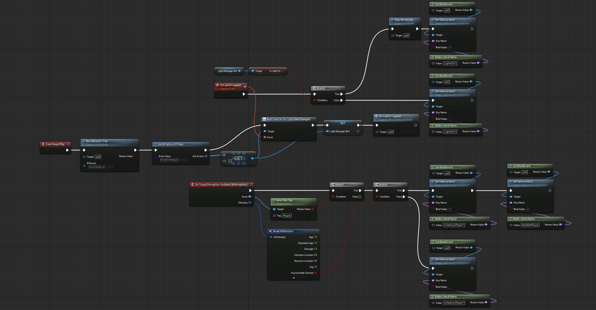
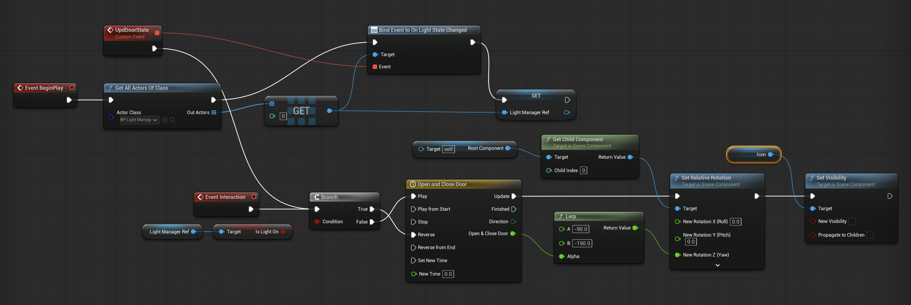
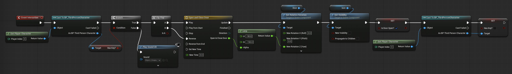

About me
I'm a master's student in the Game Design program at FAMU, with a background in film theory and history that influences how I approach storytelling in interactive media. Alongside my studies, I've spent the past 3 years working as a QA tester, gaining hands-on experience with the software development lifecycle and learning how to build user-friendly systems.
As a game designer, I focus on creating story-driven player experiences. I use every available means to communicate the story — from mechanics and systems to environments, sound, and everything the player interacts with.
My Areas of Focus
Narrative Design
Using gameplay itself as a storytelling tool, where player choices shape the narrative and story emerges from action rather than exposition.
Investigation & Discovery
Designing experiences where players piece together the truth by examining clues, spotting connections, and drawing their own conclusions.
Atmospheric Design
Shaping player experience through mechanics, pacing, sound, and environmental storytelling that make a world feel alive.
My Projects
Meaningful Work
Visual Novel · University Project
My role: Game design, narrative design, writing, scripting, sound design
Game Engine: Unity


This is my first major university project. Here, players take on the role of a postal censor, reading and redacting letters under a totalitarian regime. They have an ever-growing set of rules, which they can enforce or subtly subvert by leaving out clues that help revolutionaries organize a resistance.
This means that choices are not presented to the player explicitly, but each censored or uncensored paragraph shapes the outcome of the story and the player's character.
Goals
I worked solo on this project, with my main focus on narrative design. My goal was to create an atmospheric, immersive experience that challenges players' moral judgment while building a cohesive story and rich world through fragmented storytelling.
By piecing together small fragments of information scattered throughout the letters, players gradually uncover the truth about the world around them. From behind their desk, they influence events without ever directly participating in them. Exploring that quiet, invisible power of censorship was one of the project's central themes.
I was also aiming to realistically portray the absurdity of a totalitarian regime: the contradictions within its rules and their overwhelming complexity. Most of the censorship regulations featured in the game are based on real examples.


Gameplay Design
The gameplay revolves around two core activities: censoring letters and building dossiers.
Each letter is filled with clickable phrases the player can redact or leave visible. Two hidden stats track the consequences: a loyalty meter, and a violation count that separates "too lenient" from "too harsh", so both letting dangerous information through and over-censoring innocent details carry their own risks and feedback. In the background runs a second, uncommunicated score tracking how much resistance-relevant information the player lets slip through, encouraging players to balance doing a good enough job to stay safe with supporting or sabotaging the revolutionaries' resistance.
The dossier system adds a detective element, driven by the protagonist's growing curiosity about the lives of the people whose correspondence they read. Dossiers were designed during the iteration process to transform passive reading into active investigation. Players must recognize patterns, connect people and events, and gradually uncover an expanding conspiracy. Fields are filled in through autocomplete and dropdown selections, with an underlying evaluation system that lets players know whether their entries are on the right track.
Players are never told which choices are "correct"; instead, they must interpret the rules of the regime themselves and decide how much risk they are willing to take.


Meaningful Work (2026) Trailer
Horror Puzzle Game Prototype
Puzzle · Solo Project
My role: Game design, puzzle design, blueprint scripting
Game Engine: Unreal Engine
Goals
A single puzzle level built around four door mechanisms and one enemy type. There is no text-based tutorial; mechanics are introduced through simple environmental situations where the player can observe cause and effect and gradually build an understanding of the level's rules.
Gameplay Design
The central mechanic is the relationship between light and the environment. Light-sensitive enemies are immobilized by bright light but become aggressive in darkness, while light-sensitive doors are only open when the light is off. The enemy therefore becomes a part of the puzzle, and players must learn to lure them away and manipulate their position to be able to pass.
Level Design
The level's complexity grows through layering. The player first learns how light-sensitive doors work, and that other doors require a key to be opened. Once these rules are established, button-controlled doors are introduced, creating new possibilities within the systems the player already understands. Once the player is comfortable with these mechanics, portals are added, and already familiar mechanics become more complex, further changing how spaces and previously learned rules can be connected. Each new mechanic expands the possibilities of the existing ones rather than replacing them.
The level culminates in a sequence combining all four systems, testing the player's ability to apply a gradually developed understanding of the environment.
This is still a very early work-in-progress, so the video mainly shows the core gameplay and level-design ideas rather than a polished final experience.
Technical Details



The Gift
Point & Click · Solo Project
My role: Game design, narrative design, writing, scripting, sound design
Game Engine: Godot


A dark folklore-inspired Point & Click adventure. Two lovers embark on a journey to find a cure for the husband's mysterious illness. Conventional medicine has failed, and with hope dwindling, a doctor urges them to seek remedies buried deep in the countryside — the kind science doesn't recognize.
Goals
This was my first project, and I used it to explore how every available tool — not just the writing — could build character and theme. I wanted a folklore setting that felt lived-in and unsettling, and a story where the mechanics themselves supported the emotional weight.
The player controls Mina, who must protect her husband Jade: vulnerable, silent, and entirely dependent on her. Jade never acts or speaks for himself; he simply follows. Mina does all the talking, decision-making, and fighting. That imbalance is the emotional engine of the whole game, and it's what makes the twist at the end land.
Gameplay & Narrative Design
I designed enemy encounters to reinforce Mina's relationship with Jade. Combat is turn-based: each turn, Mina chooses to attack, shield Jade (absorbing his damage at a reduced rate), or protect herself. Jade never acts; he can only be defended. This forces a constant trade-off between offense and protection, mirroring the position Mina is in throughout the narrative.
The two characters' health pools are deliberately asymmetric — Mina has significantly more HP than Jade — reinforcing her role as the resilient protector. If either character's HP hits zero, the game resets to the checkpoint at the start of the current chapter, and health is only ever partially restored between encounters, keeping resource management tense across a full chapter rather than a single fight.
The mechanics establish Jade's dependence on Mina from the beginning, allowing the player to experience their relationship through systemic pressure rather than simply learn about it through dialogue, which is delivered via a linear narrative branch structure. The game's ending recontextualizes the player's previous actions and reinforces the game's central theme of sacrifice and emotional dependency.
Game Jam Projects
The Road to the Other Side
Visual Novel · Game Jam
My role: Narrative design, visuals, scripting, sound design
Game Engine: Godot


A visual novel based on a true story about immigrant workers forced to smuggle their dead colleague and friend across the border on a passenger bus, disguising his death to avoid complications.
I wanted to lean into the weight of this theme rather than shy away from it, and treat the border crossing almost like a Greek myth of crossing into the underworld, with the bus itself becoming a kind of Charon's ferry. Alongside the added challenge of building the game in 3D, this made for one of the most demanding but rewarding jams I've worked on.
I co-authored the concept and script with a teammate, and implemented 3D scenes, scripting, and sound design myself, adapting the visual style and mechanics to the limitations of a short game jam.
The project stood out among the jam's submissions both thematically and visually, and I'm proud of the narrative design and writing we achieved uunder such tight constraints: a 1,000-word limit and a very limited number of assets to use.
Midnight Makeover
Dress-Up · Game Jam
My role: Game design, scripting
Game Engine: Godot


A two-player party game about vanity and vampires.
The player is a vampire getting ready for a night out — but vampires cast no reflection, so they're applying makeup completely blind. The other player has the reference look from a magazine and must talk their vampire beastie through it over the phone, translating a picture into verbal instructions precise enough to recreate the look. Success means the vampire's makeup actually matches the photo — a small miracle of communication under tight conditions.
Gameplay Design
I handled programming and game design for this project: building the game in the engine, piecing together art and story, and figuring out core systems.
The core design challenge was to create asymmetric mechanics that would give both players enough information to succeed while still making failure fun.
CV
For more information about my experience, education, and skills, take a look at extended version of my CV.
Contact
Feel free to get in touch!